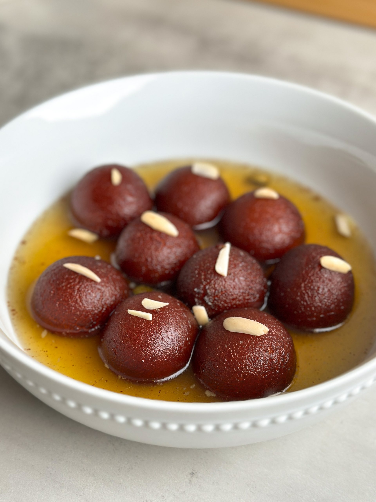

Gulab Jamun
Ingredient
- ¾ cup (100 grams) milk powder, unsweetened
- ½ cup (60 grams) maida / plain flour
- ½ tsp baking powder
- 2 tbsp ghee / clarified butter
- milk, for kneading
- ghee or oil, for frying
- Sugar syrup
Recipe
- Firstly, in a large bowl take ¾ cup milk powder, ½ cup maida and ½ tsp baking powder.
- Now add 2 tbsp ghee and mix well making the flour moist.
- Further, add milk as required start to combine. Combine well forming a soft dough. do not knead the dough.
- Cover and rest for 10 minutes. Meanwhile, prepare the sugar syrup by taking 2 cup sugar, 2 cup water, 2 cardamom and ¼ tsp saffron.
- Mix well and boil for 5 minutes or until the sugar syrup turns sticky. do not attain any string consistency.
- Turn off the flame and add 1 tsp lemon juice and 1 tsp rose water. lemon juice is added to prevent sugar syrup from crystallizing.
- Cover and keep the sugar syrup aside. After 10 minutes or resting the dough, start to prepare small ball sized jamuns.
- Make sure there are no cracks in the jamun. if there are cracks then there are high chances for jamuns to break while frying.
- Deep fry in medium hot oil or ghee. frying in ghee gives good flavour to jamuns.
- Stir continuously and fry on low flame. Fry until the jamuns turn golden brown.
- Drain off and transfer the jamun into a hot sugar syrup. Cover and rest for 2 hours or until jamuns absorb the sugar syrup and doubles in size.
- Finally, enjoy gulab jamun with ice cream or as it is.

Barfi
Ingredient
- 2½ cup milk powder, full cream
- ¾ cup sugar
- ¼ cup ghee / clarified butter
- 3 tbsp pistachios, chopped
- 1 cup milk
Recipe
- firstly, in a bowl take 2½ cup milk powder, ¾ cup sugar and 1 cup milk. whisk and mix well until everything is well combined.
- transfer the mixture into large kadai. recommend using nonstick pan to prevent from sticking
- also add ¼ cup ghee and mix well on low flame.
- keep stirring on low flame until the mixture thickens.
- the mixture will hold the shape and starts to separate the pan after 10 minutes.
- do not overcook, as the burfi will turn hard. and if the mixture is undercooked then it turns chewy.
- transfer the burfi dough into the tray lined with baking paper.press gently, making sure its leveled up.
- top with few chopped pistachios and press gently.cover and refrigerate for 1 hour or until it sets completely.
- after 1 hour, unmould the burfi and cut with sharp knife.
- finally, milk burfi recipe tastes great for a week when stored in an airtight container.